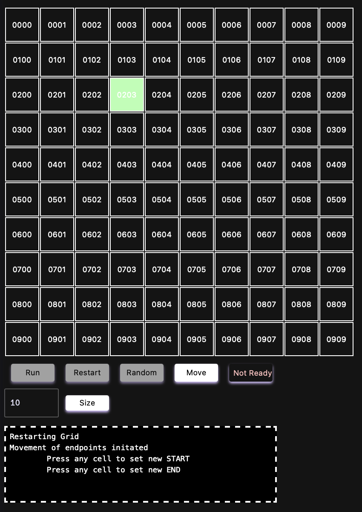

Pathfinder
RepoThe pathfinder project was made so I could learn how a pathfinding algorithm works, since it is not an algorithm I have ever programmed, and also how python programming in the web work, using
Functionality
The pathfinder consists of a grid, initially 10x10, of squares (which I will call nodes from now on), with the two edges (row 1, column 1 and row 10, column 10) being labeled START and END respectively. By clicking "Run", the algorithm finds the shortest path betweem those two nodes. The grid is color coded based on the type of node:
- - START The start cell indicates where the algorithm will begin (also labeled "start_endpoint" in the code).
- - END The node the algorithm tries to reach. If reachin it is not possible, the algorithm fails (also labeled "finish_endpoint" in the code).
- - OPEN open nodes are transparent, and they always contain a 4-digit value representing their position (first two digits: row number, last two digits: column number). The pathfinder can step into these nodes, transforming them into MOVING nodes if so
- - BLOCKED By clicking on any non-endpoint node, the user will "block" that node. The pathfinder cannot walk through blocked nodes, and will go around them.
- - FAIL If a path between the START and END nodes is not possible, all BLOCKED cells will turn red to indicated a fail state was reached (also labeled "negative_cell" in the code)
- - MOVING These are nodes the pathfinder has stepped on. When the shortest path is displayed, MOVING nodes that are part of the shortest path will be changed to PATH nodes
- - PATH When a path is reached between endpoints, the shortest path between the two will be changed to PATH nodes and colored green (apparently the name of this color is "persian green") (these are also labeled "shortest_path_cell")
- - TEMP START When moving the endpoints or sizing the grid, if a START node is not placed in the grid, the next cell clicked will be changed to a TEMP START, this is only to give visual feedback to the user that a START cell has ben chosen, and the next cell clicked will become the END cell
Components
- - Grid: The grid is where the calculation and actual interaction with the pathfinder happens
- - Run: The Run button initates the pathfinder algorithm, trying to find the shortest path (or any path) between the two endpoints
- - Restart: Restart empties all the components of the grid, while still keeping the endpoints. More specifically, any BLOCKED, FAIL, MOVING or PATHnodes will be switched back to OPEN nodes. The Restart button has to be pressed before another Run is done
- - Random: Randomizes the OPEN nodes to either OPEN or BLOCKED nodes
- - Move: The Move button is used to move the endpoints. This will deactivate all other buttons, and another run cannot be done before both endpoints are placed in the grid. The user can place the endpoints by clicking on any node. The first blocked node will be changed to a TEMP START node, indicating that node will become the new START point. The next click will be the new END point
- - Status Bar: The status bar shows the current state of the game. These can be:
- -> Ready: the user is free to click any button, including Run
- -> Path Found: A run was performed and a path between the two endpoints was found. The user has to either restart the grid, move the endpoints or change the grid's size before performing another run
- -> Not Ready: One of the endpoints is not present in the grid. The user must place both START and END nodes before progressing
- - Selector and Size: A selector with a default value of 10 and a button labeled "Size" can be seen below all other buttons. By cslicking Size, a new grid with the specified number will be created, and new endpoints will have to be placed in the grid before another run can be performed. A higher grid size may affect performance
- - Terminal: A terminal is placed below every other item. This will show outputs of the program. Although mostly used for debugging, the terminal can also be used if the user is confused with the current state of the game
The Algorithm
The pathfinder algorithm itself is composed of a breadth-first search starting from the START node, adding nodes to a queue and dequeing as it goes. It continues until a path is found or the queue is completely empty, meaning no path is possible between the two endpoints
Nodes are added to a "parent dictionary" once stepped in. Whenever a path is found, the algorithm walks backwards from that path dicitonary, now starting at the END node. This will show the shortest path
Time complexity
Passing the code through Big O Calc, the following explanation is gathered:
The time complexity of this pathfinding algorithm is O(V + E), where V is the number of vertices (cells) and E is the number of edges (connections between cells). This is because the algorithm uses a breadth-first search (BFS) approach to explore the graph of cells, visiting each cell and its neighbors once.
The space complexity of this algorithm is O(V), where V is the number of vertices (cells) in the graph. This is because the algorithm uses a queue to keep track of cells to visit next, and a list to keep track of cells that have already been visited. The maximum number of cells that can be in the queue at any given time is equal to the number of cells in the graph.
Overall, this algorithm is efficient in terms of time complexity as it explores the graph in a systematic manner, visiting each cell and its neighbors in a predictable order. The space complexity is also reasonable as it only requires storing a queue and a list of seen cells.
While BFS is effective for unweighted grids, other algorithms like A* or Dijkstra's could provide more optimal paths in different scenarios. For example, A* incorporates heuristics to estimate the distance to the end node, allowing it to find the shortest path more efficiently in larger or more complex grids. However, BFS's simplicity and guaranteed pathfinding make it a solid choice for beginners and educational purposes.
Challenges and Solutions
I decided to write the entire implementation using py-script, utilizing JavaScript to interact with the page elements. The entire program was made thrugh a py-script tag instead of linking with a Python file
Although this made the code simpler and easier, as I am pretty familiar with Python, it also meant I had no debugger, autocompletion or warnings, which slowed down debugging quite a lot
As a solution, I utilized the py-terminal tag extensively, outputting and printing any errors or assertion I made along the way
One big hurdle was modyfying the grid. Initally, the grid had fixed size of 10x10, meaning the top-left node had id "00" and bottom-right had id "99". however, by introducing variable grid sizes, id values were not reliable anymore. if the id value "119" was given to the algorithm, how could that be understood? Is it row 11 column 9 or row 1 column 19?
My solution to this was fixing the ids to 4 digits. Since grid sizes bigger than 99x99 are not very desirable as computational speed slows down too much, a 4-digit id allows the algorithm to always understand the given values. The value "0119" could be translated easily to row 1, column 19
Of course, this also brought problems in regards to the calculations being performed by the algorith, as now it is necessary to account for string manipulation. For example: if given the id "1", the algorithm has to add a leading "0" to consider it a valid id, otherwise the number will fall thorugh and no cell will be fetched
Learning Outcomes
This project was mainly done so I could learn pathfinding algorithms, but it also ended up becoming my first responsive and user-interactable website (of course ignoring the Digital Airport as that was mostly just a JavaScript learning project and not super interactable apart from two select tags)
I learned how to operate with py-script as was as how to modify the Document Object Model (DOM) to create responsive web applications, definetely a skill I will be utilizing in my next projects
The Code and Examples
You can check out the whole code for the pathfinder in the Git repo linked at the top. The entire code is condensed into one py-script tag
I will take this section to showcase some of the implementation of the code and show some screenshots that may be of interest
-
- A randomized 10x10 (default size) grid, with it's shortest path marked

-
- A grid after the Move button is clicked and the TEMP START is placed in cell "0203". You can see how the Status Bar shows "Not Ready" as the END node has not yet been placed
 -
- A grid with no possible path. This shows how the BLOCKED nodes have changed to FAIL nodes and the Status Bar now shows "No Path"

-
- A 99x99 sized grid, with random blocking and the shortest path visible